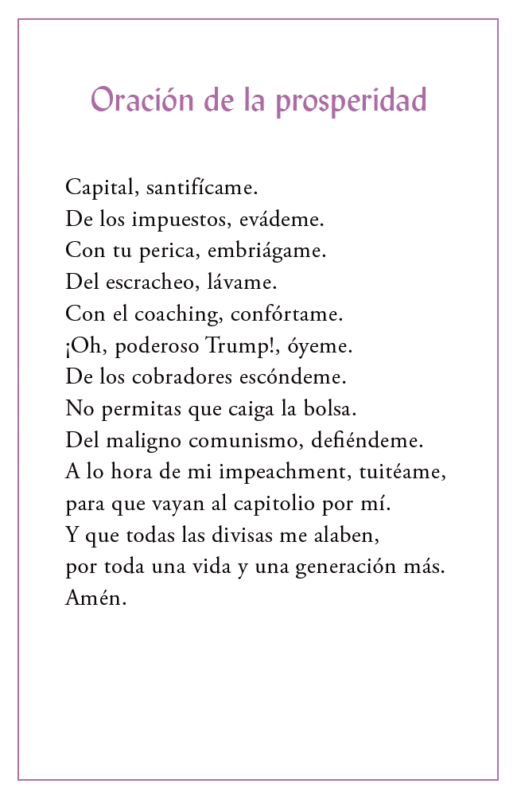

santas postales
Santas postales was a card project created in 2021. Each card was printed 10 times, except for La leyenda de Juanita, which had 20. All cards were sold and are now with their current owners.

Santas postales was a card project created in 2021. Each card was printed 10 times, except for La leyenda de Juanita, which had 20. All cards were sold and are now with their current owners.